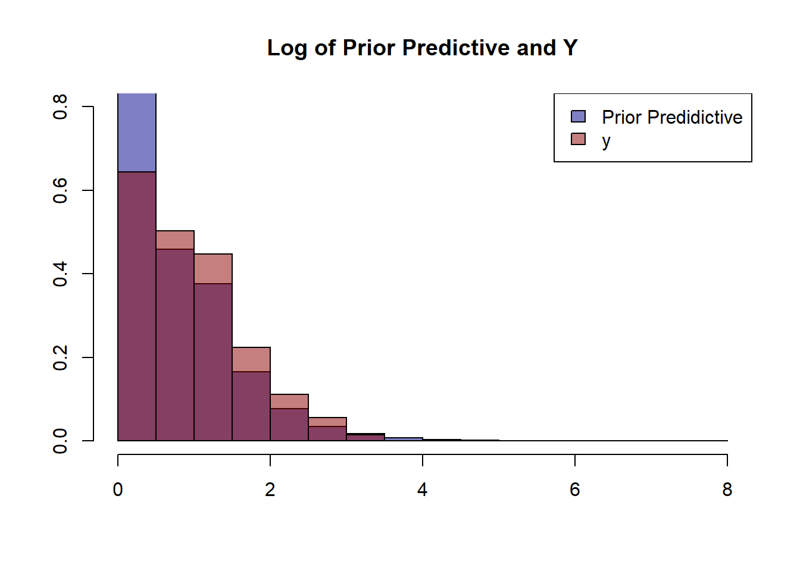
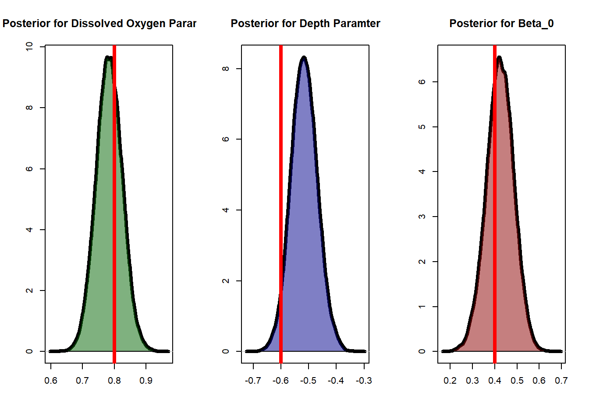
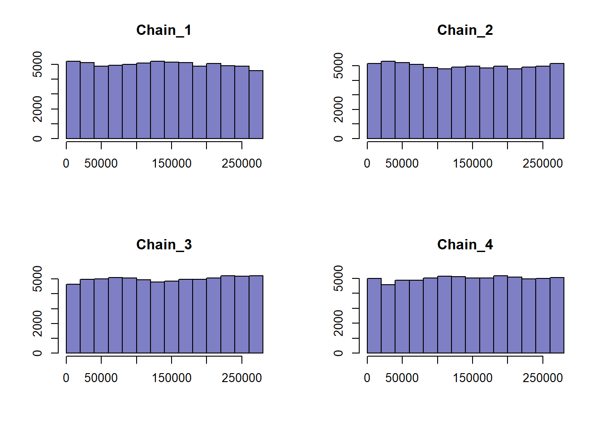
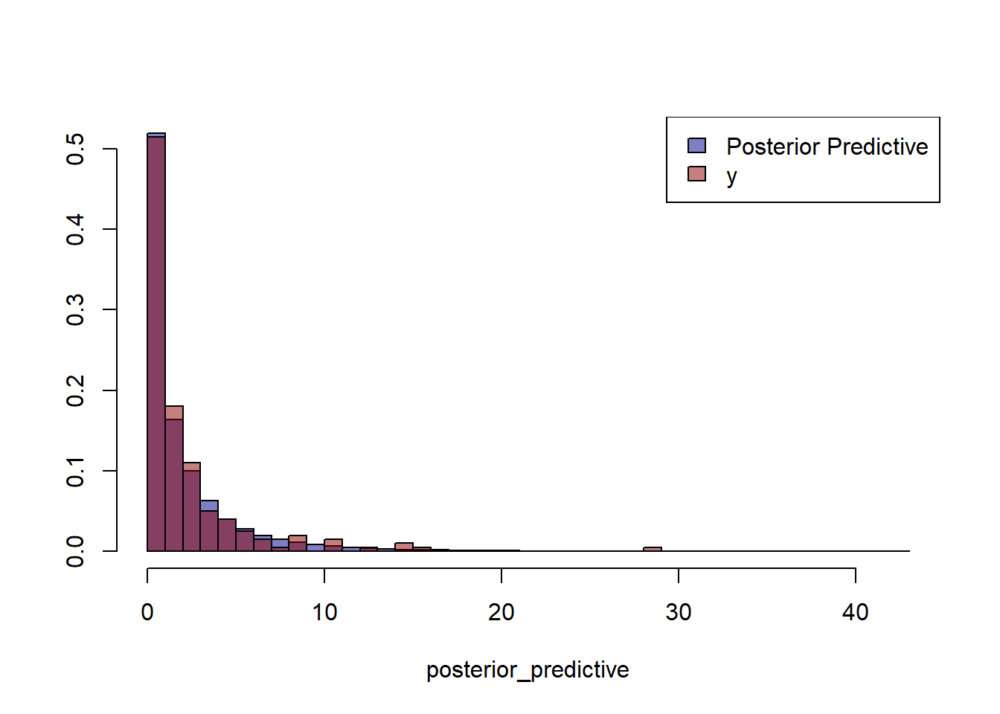
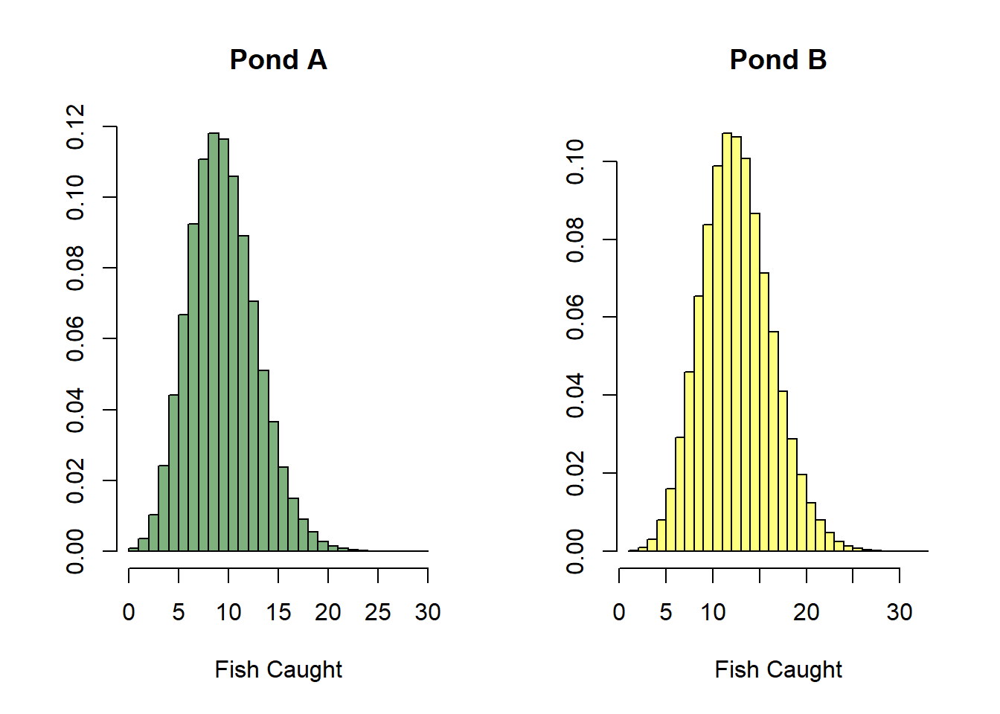
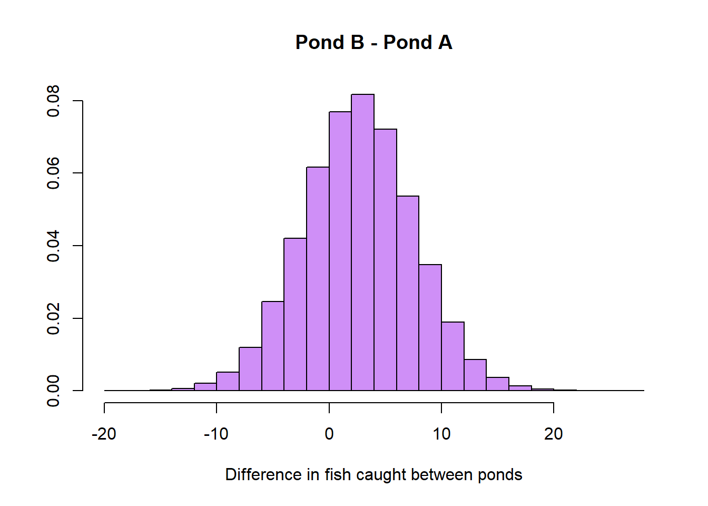

Allow me to paint a picture:
You’re an avid salmon fisherman and statistician. You’ve fished 100 ponds in the surrounding area and have recorded the hourly rate at which you catch salmon while on the water. During your time on the water you also record a couple of measurable variables for each pond: pond depth and dissolved oxygen.
Now, your friend Danny wants go fishing with you this week and suggests two ponds you haven’t fished a before. Also, since Danny is a good friend, they have kindly measured both depth and dissolved oxygen of each pond. Very thoughtful! The question now stands: which pond will you catch more salmon at?
Lets assume that the number of salmon caught \(Y\) is poisson distributed with rate \(\lambda\). \[Y \sim Poi(\lambda)\]
Let us also assume that the log rate of catching salmon is a linear function of the two pond variables:
\[\log(\lambda) = \beta_{depth}\cdot x_{depth} + \beta_{oxy}\cdot x_{oxy} + \beta_0\] Finally, we may write the probability of catching \(y\) salmon during one hour of fishing given the above parameters:
\[P(y|x_i;\beta_{depth},\beta_{oxy},\beta_0)=\frac{\lambda^y}{y!}e^{-\lambda}, \hspace{4mm} \lambda=\exp(\beta_{depth}\cdot x_{depth} + \beta_{oxy}\cdot x_{oxy} + \beta_0)\] Now, let’s generate some data!
library(dplyr)
library(rstan)# Function to standardize data
standardize <- function(x){
return((x - mean(x)) / sd(x))
}
set.seed(1234)
N <- 200 # Number of ponds fished at
x_oxy <- rnorm(N, 5, 1) # Dissolved oxygen in mg per Liter
x_depth <- abs(rnorm(N, 30, 10)) # Pond depth
b_oxy <- 0.8
b_depth <- -0.6
b_int <- 0.4
lambda <- exp(b_oxy*standardize(x_oxy) + b_depth*standardize(x_depth) + b_int)
y <- rpois(length(lambda), lambda = lambda)
par(mfrow=c(1,2))
plot(x_oxy, y, pch=16, col='darkblue', ylab='Fish Caught Per Hour', xlab='Dissolved Oxygen (mg/L)')
plot(x_depth, y, pch=16, col='darkred', ylab='Fish Caught Per Hour', xlab='Pond Depth (m)')
First, we will assume that the parameters \(\beta_{depth}\), \(\beta_{oxy}\), and \(\beta_0\) are independent of each other such that the joint probability distribution for the parameters can be expressed as:
\[P(\beta_{depth}, \beta_{oxy}, \beta_0 ) = P(\beta_{depth} ) \cdot P(\beta_{oxy})\cdot P(\beta_0)\]
Now, observing the data from the plots above, we can assume that \(\beta_{depth}\) will be positive and \(\beta_{oxy}\) to be negative. Thus, we can set out priors to reflect this observation:
\[\begin{align} Y &\sim Poi(\lambda) \\ \log(\lambda) &= \beta_{depth}\cdot x_{depth} + \beta_{oxy}\cdot x_{oxy} + \beta_0 \\ \beta_{depth} &\sim N(0.5, 0.5) \\ \beta_{oxy} &\sim N(-0.5,0.5) \\ \beta_0 &\sim N(0, 0.5) \end{align}\]
Let’s now define our likelihood and priors in R:
log_poi_liklihood <- function(params){
lam_cands <- exp(params[['b_oxy_cand']]*standardize(x_oxy) +
params[['b_depth_cand']]*standardize(x_depth) +
params[['b_int_cand']])
return(sum(dpois(y, lam_cands, log=T)))
}
log_prior <- function(params){
return(
dnorm(params[['b_oxy_cand']], 0.5, 0.5, log=T) +
dnorm(params[['b_depth_cand']], -0.5, 0.5, log=T) +
dnorm(params[['b_int_cand']], 0, 0.5, log=T)
)
}
log_posterior_prob <- function(params){
return(log_prior(params) + log_poi_liklihood(params))
}While defining our priors it is always good practice to make sure that they make sense by checking the prior predictive distribution. We can do this by taking some samples from our prior distributions and using them in place of our model.
n_prior_samples <- 1e3
sample_priors <- cbind(rnorm(n_prior_samples, 0.5, 0.5),
rnorm(n_prior_samples, -0.5, 0.5),
rnorm(n_prior_samples, 0,0.5))
prior_predicitive <- cbind(standardize(x_oxy), standardize(x_depth)) %>% apply(., 1, function(x)
rpois(n=n_prior_samples, exp(x[1]*sample_priors[,1] + x[2]*sample_priors[,2] + sample_priors[,3]) ))
hist(prior_predicitive %>% log(),prob=T,ylim=c(0,0.8), col=adjustcolor('darkblue', alpha.f = 0.5),
main='Log of Prior Predictive and y', xlab='', ylab='')
hist(y %>% log(), prob=T, add=T, col=adjustcolor('darkred', alpha.f = 0.5))
legend('topright', c('Prior Predidictive','y'), fill=c(adjustcolor('darkblue', alpha.f = 0.5),
adjustcolor('darkred', alpha.f = 0.5)))
Metropolis Hastings is rejection sampler defined as the following.
Suppose we have some sampled value \(x_t\) and some function \(P(x)\) the returns the probability of a given \(x\). We also have some proposal function that generates a new \(x_{t+1}\) given a previously sampled \(x_t\) defined by \(g(x_{t+1}|x_t)\).
Now, we need some way to “reject” or “accept” some newly generated \(x_{t+1}\) value from our function \(g\). Define this probability of acceptance to be
\[a=\frac{P(x_{t+1})g(x_t|x_{t+1})}{P(x_t)g(x_{t+1}|x_t)}\] Usually (and for our case today), we’ll choose a function \(g\) such that \(g\) is symmetric, or \(g(x_t|x_{t+1})=g(x_{t+1}|x_t)\). A common choice to achieve this property would be to assume \(g\) is normal with mean equal to the given point. In other words \[g(x_t|x_{t+1})\sim N(x_{t+1},\sigma)\]
Note, here \(P(x)\) will be the probability of our sampled \(\{\beta_{depth}, \beta_{oxy}, \beta_0 \}\) given our data, as that is the posterior we which to rejection sample from.
Now, let’s write our MCMC algorithm and sample from our posterior! We run 4 different chains to get the best estimate of our posterior.
N_sim <- 1e5
N_chains <- 4
mcmc_chain <- function(N_sim, explore_param){
curr_params <- list(
b_oxy_cand = rnorm(1, 0, 4),
b_depth_cand = rnorm(1, 0, 4),
b_int_cand = rnorm(1, 0, 4)
)
chain <- matrix(NA, nrow=N_sim, ncol=3)
for (i in 1:N_sim){
cand_params <- list(
b_oxy_cand = rnorm(1, curr_params[['b_oxy_cand']], explore_param),
b_depth_cand = rnorm(1, curr_params[['b_depth_cand']], explore_param),
b_int_cand = rnorm(1, curr_params[['b_int_cand']], explore_param)
)
a <- min(1, exp(log_posterior_prob(cand_params) -
log_posterior_prob(curr_params)))
u <- runif(1)
if (u <= a){
chain[i,] <- unlist(cand_params)
curr_params <- cand_params
}
else{
chain[i,] <- unlist(curr_params)
}
}
return(chain)
}
simulation <- list()
for (i in 1:N_chains){
simulation[[paste0('chain_',i)]] <- mcmc_chain(N_sim, explore_param = 0.01)
}
burn <- 3e4Let’s see how well our posteriors match the actual values:

Focusing on \(\beta_{oxy}\), let’s see how well our chain converged using rank plots:
a <- simulation %>% lapply(., function(x) x[-seq(1,burn),1]) %>% unlist() %>% rank() %>%
matrix(., ncol=4)
par(mfrow=c(2,2))
for (i in 1:4) hist(a[,i], col=adjustcolor('darkblue', alpha.f = 0.5), main=paste0('Chain_',i),
xlab='', ylab='') Rank plots are calculated by combining all our MCMC samples and finding each samples respective rank. The resulting ranks are separated back into their respective chains and plotted as histograms. If the MCMC sampler converged and the chains mixed well without a high degree of autocorrelation, we can expected uniform distributions for each rank plot.
There a couple of metrics we can look at to assess the convergence of our MCMC sampling. One main metric is \(\hat{R}\). It tells us how well all our chains converged and mixed. A good rule of thumb is to have \(\hat{R}\) under 1.05.
The other metrics have to do with effective sample size (ESS). In MCMC sampling, we are assuming a level of independence for samples not directly adjacent. In other words, we are hoping for a low degree of autocorrelation. Simply put, if we have a high degree of autocorrelation in our samples then we effectively have less information describing our posterior. This is what ESS measures, the degree of autocorrelation in our chains. The first, bulk-ESS tells us how well the center or bulk of our posterior has been sampled. The second is tail-ESS, which tells us how well our posterior tails were sampled. A good rule of thumb is to have a bulk-ESS and tail-ESS greater than 400.
metric_mat <- matrix(NA, nrow=3, ncol=3)
for (i in 1:3){
metric_mat[1,i] <- Rhat(simulation %>% lapply(., function(x) x[-seq(1,burn), i]) %>%
as.data.frame() %>% as.matrix()) %>% round(.,2)
metric_mat[2,i] <- ess_bulk(simulation %>% lapply(., function(x) x[-seq(1,burn), i]) %>%
as.data.frame() %>% as.matrix()) %>% round(.,1)
metric_mat[3,i] <- ess_tail(simulation %>% lapply(., function(x) x[-seq(1,burn), i]) %>%
as.data.frame() %>% as.matrix()) %>% round(.,1)
}
colnames(metric_mat) <- c('b_oxy', 'b_depth', 'b_0')
row.names(metric_mat) <- c('r_hat', 'bulk_ess', 'tail_ess')
knitr::kable(metric_mat, align = 'ccc')| b_oxy | b_depth | b_0 | |
|---|---|---|---|
| r_hat | 1.0 | 1.0 | 1.0 |
| bulk_ess | 2031.8 | 2014.0 | 1193.1 |
| tail_ess | 4640.0 | 4357.2 | 2468.5 |
A good measure to determine how well model fits our data is to plot the posterior predictive against the observed data.
posterior_predictive <- cbind(standardize(x_oxy), standardize(x_depth)) %>% apply(., 1, function(x)
rpois(n=n_prior_samples, exp(x[1]*posterior_oxy + x[2]*posterior_depth + posterior_int))) %>% c()
hist(posterior_predictive,prob=T, col=adjustcolor('darkblue', alpha.f = 0.5),
breaks=length(unique(posterior_predictive)),
main='Posterior Predictive and y', ylab='', xlab='')
hist(y, prob=T, add=T, col=adjustcolor('darkred', alpha.f = 0.5), breaks=34)
legend('topright', c('Posterior Predictive','y'), fill=c(adjustcolor('darkblue', alpha.f = 0.5),
adjustcolor('darkred', alpha.f = 0.5)))
Back to the question at hand: what pond should you fish at? Let’s say your friend Danny has the following measurements for the two ponds in question.
| Dissolved Oxygen | Pond Depth | |
|---|---|---|
| Pond A | 8 | 40 |
| Pond B | 7 | 20 |
From our posterior samples, we can obtain distributions representing our uncertainty for the fish we will catch at each of the ponds in question.
par(mfrow=c(1,2))
pond_a <- ((ponds$`Dissolved Oxygen`[1] - mean(x_oxy)) / sd(x_oxy)) * posterior_oxy +
((ponds$`Pond Depth`[1] - mean(x_depth)) / sd(x_depth)) * posterior_depth + posterior_int
pond_a <- rpois(length(pond_a), exp(pond_a))
hist(pond_a, breaks=length(unique(pond_a)), prob=T, col=adjustcolor('darkgreen', alpha.f = 0.5),
main='Pond A', xlab='Fish Caught', ylab='')
pond_b <- ((ponds$`Dissolved Oxygen`[2] - mean(x_oxy)) / sd(x_oxy)) * posterior_oxy +
((ponds$`Pond Depth`[2] - mean(x_depth)) / sd(x_depth)) * posterior_depth + posterior_int
pond_b <- rpois(length(pond_b), exp(pond_b))
hist(pond_b, breaks=length(unique(pond_b)), prob=T, col=adjustcolor('yellow', alpha.f = 0.5),
main='Pond B', xlab='Fish Caught', ylab='')
Now, we can take the difference of the two distributions and come to our conclusion.
pond_diff <- (pond_b - pond_a)
hist(pond_diff, prob=T, main='Pond B - Pond A', xlab='Difference in fish caught between ponds', ylab='',
col=adjustcolor('purple', alpha.f = 0.5))If we want to find the expected increase in fish in choosing pond B of pond A, it’s as simple as taking the average of our above distribution.
## [1] 3.110529Hence, after our extensive analysis we can come to the conclusion that it is best to choose Pond B over A. Although, maybe your friend Danny has left by now!